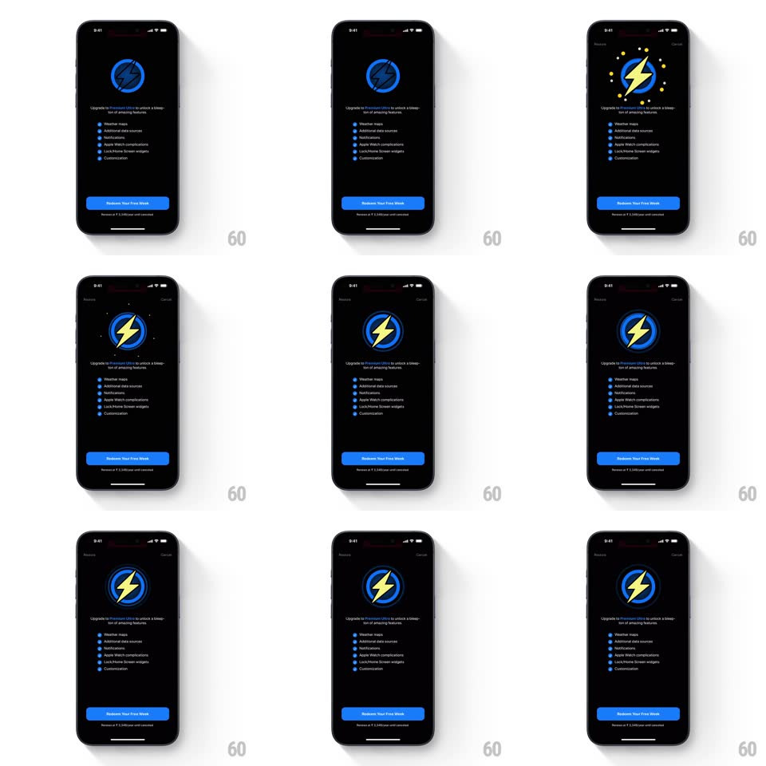

Media
Frame-by-frame

Rebuild this interaction 1:1: CARROT's Premium Club paywall - a lightning-bolt badge pulses at the top as it springs from muted blue to a glowing yellow bolt, above the feature list and a blue "Redeem Your Free Week" button.

Rebuild this interaction 1:1: CARROT's Premium Club paywall - a lightning-bolt badge pulses at the top as it springs from muted blue to a glowing yellow bolt, above the feature list and a blue "Redeem Your Free Week" button. ## Integration Integration: stack-agnostic spec - springs given as stiffness/damping, timed motions as duration + curve; map every value to your framework and animation library of choice. ## Scene Black paywall: a circular badge containing a lightning bolt, "Upgrade to Premium Club to unlock a boatload of amazing features", six feature rows with small blue dot icons (Weather maps, Additional data sources, Notifications, Apple Watch complications, Lock/Home Screen widgets, Customization), the blue CTA, and fine renewal print below. ## Motion spec Pattern: badge ignition. - Entrance: the badge scales in from 0.6 with a spring (~380/18) in a muted blue/gray state; the copy block and feature rows fade up beneath it (stagger 60ms per row). - Ignition (~700ms in): the bolt flips to bright yellow with a pop (scale 1 -> 1.15 -> 1, spring ~450/16) and the ring around it brightens; a ring of small dots/sparks flashes once around the badge (scale 0.5 -> 1, fade, 350ms). - Idle: the badge pulses slowly - the ring's glow breathes (opacity 0.5 <-> 1, 1.8s) and the bolt holds its yellow. - The CTA slides up last (spring ~320/24) and stays solid blue. ## Calibration - The color flip (muted -> yellow) is the single dramatic beat; everything else is gentle staggering. - Feature rows are static once in - the badge is the only looping element. ## Reduced motion Badge fades in already yellow; no pulse loop. ## Don't miss - The bolt sits slightly tilted inside the ring - CARROT's cheeky angle, keep it. - Renewal fine print is present and legible under the CTA.